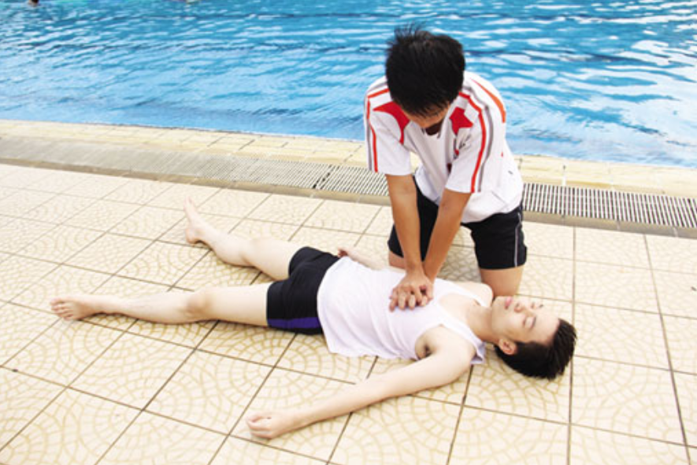

Những điều cần biết về sơ cứu đuối nước
Đuối nước là một dạng của ngạt, do nước bị hít vào phổi, hoặc tắc đường thở do co thắt thanh quản khi nạn nhân ở trong nước. Đây là một tai nạn hay gặp, xảy ra trong khi bơi, đi thuyền và trong các hoạt động dưới nước. Tuy nhiên, cũng có thể xảy ra tại nhà như trong bồn nước, chum, vại, rãnh nước,...

Khi bị ngạt nước, nạn nhân bị ngừng thở, tim đập chậm lại do phản xạ. Tình trạng ngừng thở tiếp tục dẫn đến thiếu oxy máu, gây tăng nhịp tim, huyết áp. Nếu ngừng thở tiếp tục kéo dài trong khoảng từ 20 giây đến 2 - 5 phút (tùy thuộc từng nạn nhân) thì đạt đến ngưỡng và nhịp thở lại xuất hiện khiến cho nước bị hít vào gây co thắt thanh quản tức thì, xuất hiện cơn ngừng thở lần 2, sau đó là các nhịp thở bắt buộc khiến cho nước, dị vật bị hít vào phổi. Hậu quả là nhịp tim chậm dần lại, rối loạn nhịp, ngừng tim và tử vong.
1. Cách sơ cứu đuối nước
Sơ cứu tại chỗ và đúng kỹ thuật là quan trọng nhất, quyết định sự sống còn hay di chứng não của nạn nhân.
Để cứu sống nạn nhân ngạt nước phải ngăn chặn kịp thời các tiến trình trên, tốt nhất là ngay từ khi có cơn ngừng thở đầu tiên tức là trong vòng 1- 4 phút đầu tiên khi bị chìm trong nước, đồng thời xử lý tốt các chấn thương kèm theo (đặc biệt là chấn thương đầu cổ và cột sống).
Cách sơ cứu đúng như sau:
-
Nhanh chóng đưa nạn nhân ra khỏi mặt nước bằng cách đưa cánh tay, cây sào dài cho nạn nhân nắm, ném phao hoặc vớt nạn nhân lên
- Đặt nạn nhân nằm chỗ khô ráo, thoáng khí
Nếu nạn nhân bất tỉnh hãy kiểm tra xem nạn nhân còn thở hay không bằng cách quan sát sự di động của lồng ngực:
- Nếu lồng ngực không di động tức là nạn nhân ngưng thở, hãy tiến hành ấn tim ngoài lồng ngực ở nửa dưới xương ức. Phối hợp ấn tim và thổi ngạt theo tỉ lệ 15/2 (2 cấp cứu viên) hoặc 30/2 (1 cấp cứu viên) trong 2 phút rồi đánh giá lại xem nạn nhân có thở lại được không? Môi có hồng không? Có phản ứng khi lay gội kích thích đau không? Nếu không và phải tiếp tục các động tác cấp cứu này ngay cả trên đường chuyển nạn nhân tới cơ sở y tế.
- Nếu nạn nhân còn tự thở, hãy đặt nạn nhân ở tư thế an toàn là nằm nghiêng một bên để chất nôn dễ thoát ra ngoài nếu nạn nhân nôn ói
- Cởi bỏ quần áo ướt và giữ ấm bằng cách đắp lên người nạn nhân bằng chăn hay một tấm khăn khô
- Nhanh chóng đưa nạn nhân đến cơ sở y tế ngay cả khi nạn nhân có vẻ như bình thường hoặc đã hồi phục hoàn toàn sau sơ cứu vì nguy cơ khó thở thứ phát có thể xảy ra vài giờ sau ngạt nước
2. Những việc cần tránh làm khi bị đuối nước
Phần lớn các nạn nhân bị ngạt nước khi đưa đến cấp cứu tại các bệnh viện không được sơ cứu hay sơ cứu không đúng cách dẫn đến tử vong hoặc di chứng não do thiếu oxy. Các cách sơ cứu không đúng bao gồm:
Bỏ nhiều thời gian cho việc xốc nước: động tác dốc ngược nạn nhân không cần thiết và không nên thực hiện vì thường lượng nước vào phổi rất ít chứ không phải phổi chứa đầy nước như người dân thường nghĩ. Lượng nước rất ít này sẽ được tống ra ngoài khi nạn nhân tự thở lại. Ngoài ra việc xốc nước còn làm chậm thời gian cấp cứu thổi ngạt và tăng nguy cơ hít sặc.
Lăn lu: cho trẻ nằm sấp trên cái lu được để rơm nung cháy bên trong lăn lu qua lại nhằm mục đích “rút nước” trong cơ thể trẻ ra. Phương pháp này không hiệu quả, còn gây phỏng cho trẻ.
Các nạn nhân ngưng thở ngưng tim không được cấp cứu thổi ngạt và ấn tim tại nơi xảy ra tai nạn hoặc trong lúc vận chuyển nạn nhân tới cơ sở y tế. Điều này làm cho não và các cơ quan thiếu oxy kéo dài, chết tế bào não dẫn tới tử vong và di chứng não nặng nề. Vì thế tốt nhất là phải cấp cứu thổi ngạt ngay khi đưa đầu nạn nhân lên khỏi mặt nước trước khi đưa vào bờ.
3. Những yếu tố sau đây làm tăng nguy cơ ngạt nước
Không biết bơi hoặc tự đánh giá cao khả năng bơi lội của mình.
Các hành vi nhiều rủi ro như tắm sông, chơi ở trên bờ ao hồ...
Thiếu sự giám sát của người lớn.
Hạ thân nhiệt dẫn đến suy kiệt nhanh, không đủ sức bơi.
Không phát hiện được loạn nhịp tim nguyên phát. Ví dụ ngâm mình trong nước lạnh có thể gây ra tử vong ở những bệnh nhân có hội chứng QT kéo dài bẩm sinh type 1.
Ở trẻ lớn có thể do uống rượu, sử dụng ma túy...
Chấn thương, tai biến mạch máu não, nhồi máu cơ tim.
Tăng thông khí trước khi nhảy xuống nước làm giảm PaCO2, trong khi đó PaO2 giảm còn 30 – 40 mmHg do tiêu thụ. Vì PaCO2 giảm nên không kích thích được hô hấp. điều này gây ra thiếu oxy não, co giật, mất ý thức dẫn đến chết đuối.
4. Tiên lượng xấu của bệnh
Thời gian chìm dưới nước > 5 phút
Glasgow lúc vào < 5 điểm
Đồng tử giãn, mất phản xạ ánh sáng
Ngừng tim, ngừng thở lúc vào viện
pH máu lúc vào viện < 7
5. Xử trí
Cấp cứu tại chỗ
Mục tiêu chính: hồi sinh tim phổi
Nhanh chóng đưa bệnh nhân lên khỏi mặt nước
Lấy dị vật (nếu có) và tiến hành hô hấp nhân tạo ngay.
Tiến hành ép tim ngoài lồng ngực càng sớm càng tốt nếu ngừng tim
Nếu tổn thương cột sống cổ: cần cố định và thận trọng khi di chuyển
Nhanh chóng vận chuyển bệnh nhân đến bệnh viện
6. Phòng ngừa đuối nước
Vấn đề phòng ngừa ngạt nước rất quan trọng. Theo thống kê tại Bệnh viện Nhi đồng 1, các trường hợp ngạt nước do té vào ao, sông gần nhà, các dụng cụ chứa nước trong nhà như lu khạp, xô nước, ... chiếm khoảng 20% và đa số ở trẻ < 5 tuổi. Do đó, cần phải giáo dục hướng dẫn các bậc cha mẹ cách bảo quản tốt các dụng cụ chứa nước trong nhà.
Ngoài ra cần ngăn cấm trẻ tắm sông, ao, hồ, biển, ... hoặc những nơi không người quản lý trông nom trẻ. Hơn nữa, cần quản lý chặt chẽ trẻ em tắm tại các hồ bơi, các cứu hộ viên nên làm việc tích cực và phải được hướng dẫn cách sơ cứu ngạt nước cho cả người lớn và trẻ em.
Tại trường học, cần có kế hoạch giáo dục và huấn luyện thực tập bơi lội cho học sinh:
Không để trẻ nhỏ một mình ở nhà, đậy kín các vật chứa nước trong nhà
Không cho trẻ chơi một mình gần ao, hồ, kênh, rạch, sông: luôn có người lớn đi theo
Không cho bệnh nhân động kinh bơi
Nên hướng dẫn tập bơi, cho trẻ học bơi
Nhà trường lưu ý dặn dò học sinh cuối năm nghỉ hè về vấn đề đi bơi, hay chèo thuyền vùng sông nước rất nguy hiểm, không an toàn, cần có sự giám sát.
Đội cứu hộ lưu động: việc tổ chức các đội, nhóm cấp cứu lưu động là rất cần thiết trong hoàn cảnh hiện nay của nước ta khi trình độ dân trí chưa cao, người dân còn quá nhiều sai lầm trong sơ cứu ngạt nước dẫn đến những hậu quả đáng tiếc cho trẻ và gia đình